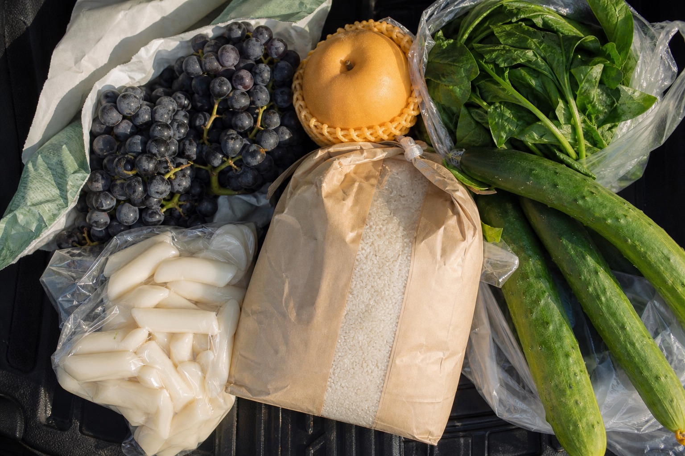
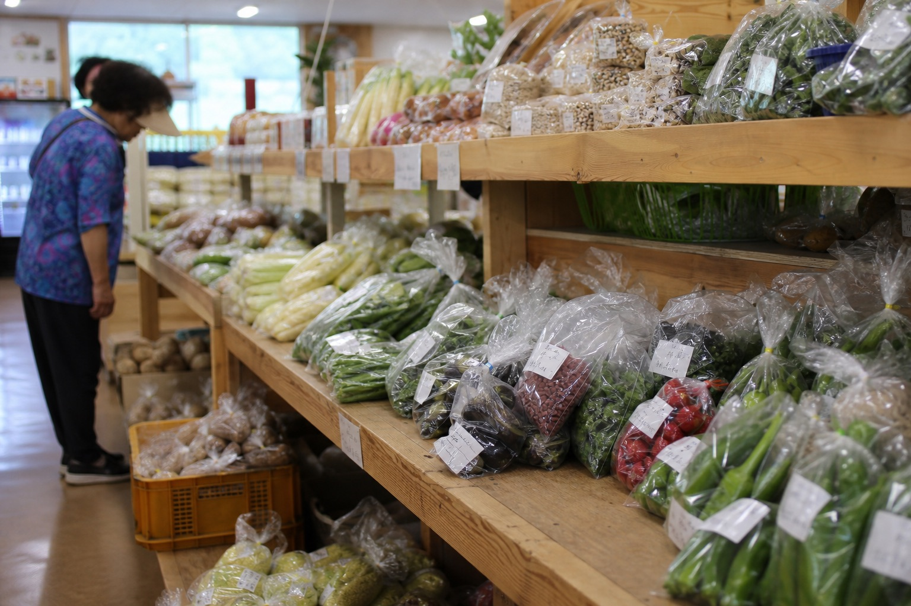
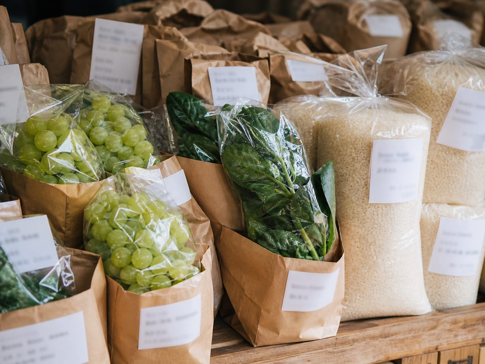

포도
품종과 수확일, 보관 방법을 파는 분께 여쭙는다. 같은 안성산이어도 농가와 출하 시기에 따라 맛이 다르다. 캠벨·거봉·샤인머스캣은 사실상 다른 과일이다.
고르는 법 ▶ 06 SEASON PICK명절 선물이라면 받는 분이 껍질째 먹는 걸 선호하는지 먼저 확인. 샤인머스캣과 캠벨은 먹는 방식이 다르다.
트렁크가 무거워지는 이유
한 그릇이 여행의 시작이었다면, 장바구니는 그 맛을 집으로 이어가는 방법이다.

한 그릇이 여행의 시작이었다면, 장바구니는 그 맛을 집으로 이어가는 방법이다.
그리고 9월은 명절 선물 시즌으로 넘어가는 달이다. 안성마춤 다섯 품목은 공교롭게도 명절 선물 목록과 그대로 겹친다. 여행길에 눈으로 봐 두면 9월이 한결 편해진다.
품목은 사진 대신 글로 훑습니다. 앞에서 요리한 재료를 뒤에서 다시 만납니다.
품종과 수확일, 보관 방법을 파는 분께 여쭙는다. 같은 안성산이어도 농가와 출하 시기에 따라 맛이 다르다. 캠벨·거봉·샤인머스캣은 사실상 다른 과일이다.
고르는 법 ▶ 06 SEASON PICK명절 선물이라면 받는 분이 껍질째 먹는 걸 선호하는지 먼저 확인. 샤인머스캣과 캠벨은 먹는 방식이 다르다.
포장지의 생산 정보와 도정일을 본다. 국밥에서 국물만큼 밥이 중요하다는 걸 알게 된 뒤라면 이 습관이 생긴다. 소비 속도를 생각해 양을 고르는 게 신선하게 먹는 요령이다.
명절 선물이라면 큰 포장보다 적당한 크기가 낫다. 쌀은 오래 두면 도정일의 의미가 사라진다.
05 PAIRING의 초무침 재료다. 늦여름부터 나오기 시작한다. 고를 때는 무게를 본다. 같은 크기라면 무거운 쪽이 수분이 많다.
써 보기 ▶ 05 PAIRING 배·오이 초무침명절 선물이라면 크기가 고른 것으로 상자 단위. 선물용은 대개 별도 규격이 있다.
04 HOME TABLE에서 쓰는 국거리가 여기서 나온다. 집에서 국밥을 끓일 생각이라면 이 코너를 그냥 지나치기 어렵다.
만들어 보기 ▶ 04 HOME TABLE명절 선물이라면 냉장·냉동 여부와 배송 방식을 미리 확인.
안성인삼농협이 별도 직매장을 운영할 만큼 자리 잡은 품목이다. 수삼인지, 건조했는지, 가공품인지는 매대에서 형태를 보고 고른다.
명절 선물이라면 보관 방법과 받는 분의 쓰임부터 맞춘다. 생것은 이동이 짧을수록 좋다.

무엇을 살까와 어디서 살까를 나눴습니다. 주소와 시간은 안성시 공식 안내를 따릅니다.
채소와 과일 사이에 생활용품 좌판이 섞여 선다. 다만 모든 물건이 안성산은 아니다. 지역 농산물을 찾는다면 원산지와 생산자를 확인해야 한다.
곡류·채소·과일·축산물·가공식품이 있다. 농가가 직접 포장하고 직접 가격을 붙여 내놓는 구조라 봉지마다 이름이 있다. 입점 품목과 재고는 날마다 달라진다.
같은 직매장 구조다. 이름대로 인삼 품목이 가깝고, 곡류·채소·과일·축산물·가공식품도 함께 선다.
